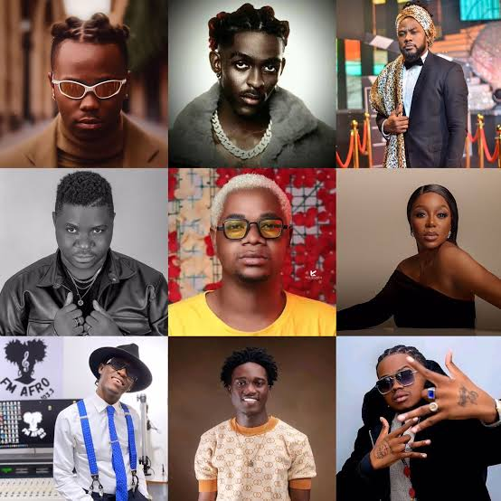

15 de setembro de 2026
A história da música angolana: dos ritmos tradicionais à era digital
Conheça alguns dos caminhos que marcaram a evolução da música angolana e a sua presença na era digital.
Ler artigo